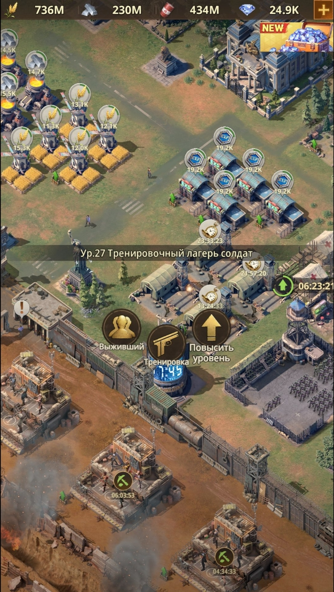
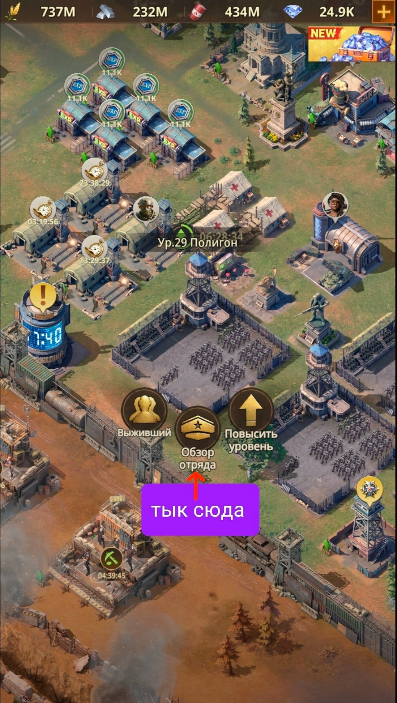
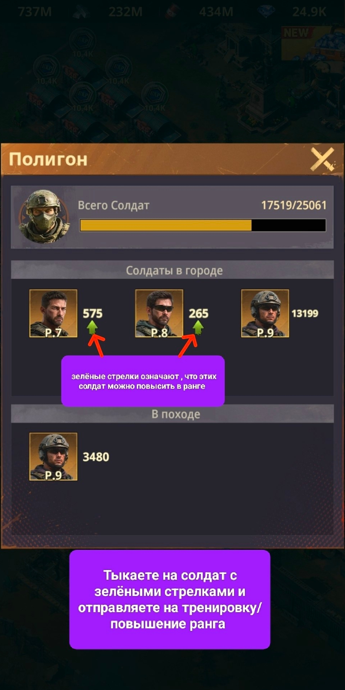
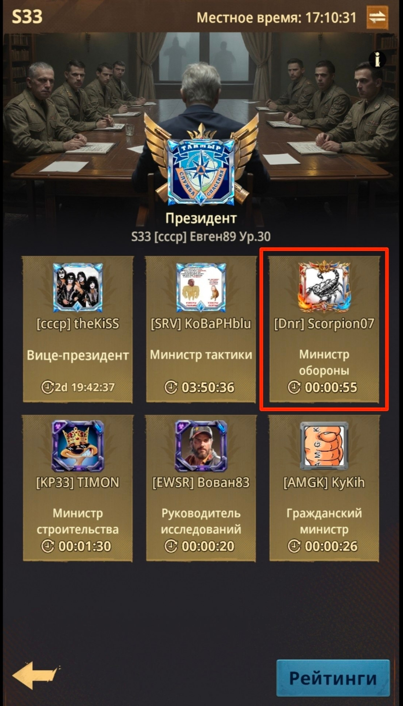

🪖 Солдаты
🪖 Солдаты Всех солдат в Полигоне Вам необходимо держать максимально доступного ранга на момент. Если Вам доступно обучение Р5 (ранга 5) солдат, то все солдаты в Полигоне должны быть повышены/переобучены до этого ранга. 💡 С открытием каждого нового ранга ваша задача - переобучить всех солдат до этого ранга.
🏭 Тренировочные лагеря Поэтому всегда держим один Тренировочный лагерь на одном уровне с вашей Базой. А другие лагеря можете оставить в «лестничном» порядке - например, один 14-го уровня, второй 17-го, третий 20-го.
👔 Министр обороны Также не забывайте использовать должность «Министра обороны», чтобы сократить время тренировки и увеличить число тренируемых. 🔁 Сначала дожидаетесь назначения на должность и только потом запускаете тренировки.

🏭 Тренировочные лагеря разных уровней вокруг Базы

👉 Нажмите «Обзор отряда» на здании Полигон

🎯 Полигон - солдаты с зелёными стрелками готовы к повышению ранга, тыкайте на них для тренировки

🏛️ Кабинет министров - здесь подаётся заявка на пост «Министр обороны»